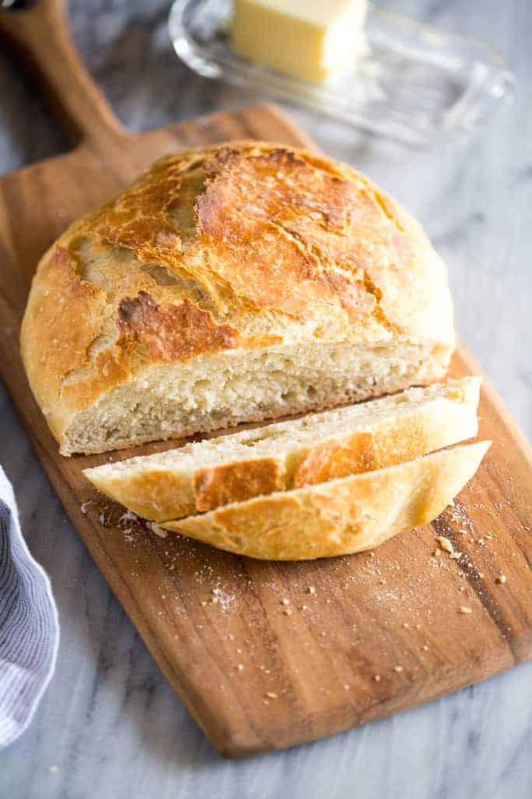

Bread

Ingredients:
- 3 cups Bread Flour (King Arthur)
- 1 1/2 cups Water (room temperature)
- 1/4 tsp Instant Bread Yeast
- 1 1/4 tsp Salt
Steps
- In a bowl, add yeast to water and let sit for 10 minutes
- Mix in flour to water until a shaggy mass forms
- Cover with plastic wrap for 17 hours or until bubbly
- Preheat oven to 500f with dutch oven. Shape dough, then cover with cloth
- After 1 hour, score dough and place in dutch oven
- Bake for 35 minutes with lid on, then remove lid and bake additional 5 minutes
- Remove bread to counter to rest for 1 hour before cutting in